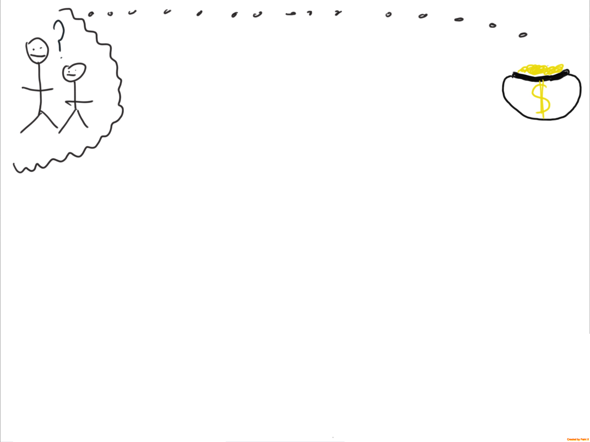

DevOps: The Gaps & The Dinosaur
Created by Sam Marland / Dónal Spring

Sam Marland
DevOps | Tech Lead | Agile

Dónal Spring
Fullstack JS | DevOps | Agile
Demo
This presentation is running on this laptop
It's Reveal.js and Node
We're going to create an app on Bluemix and
create a DevOps pipeline to build, test
and deploy this app
All of this will happen when any developer pushes
to the master branch
What is DevOps
Bridges the Gaps
(Communication, Collaboration & Integration)
Build > Test > Deploy

What DevOps is not?


Meet Derek
Monitoring
Thank you and goodbye!
sam@uk.ibm.com
donal@uk.ibm.com